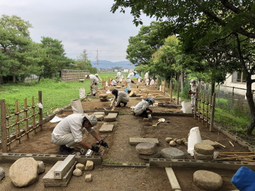
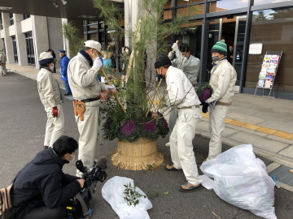
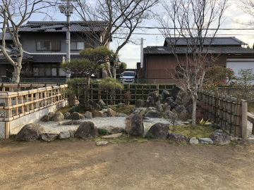

造園技術科
造園技術科では、庭園設計と作庭技術、樹木の植栽や剪定技術、その他植物の保護管理等の基礎的知識と技能の習得を目指します。剪定技術や竹垣製作に向けた訓練では、校外実習を組み入れ、また、造園作業に必要な機械操作等の資格を取得することで、関連業種において活躍できる人材を育成します。修了前には、校庭で庭園製作に取り組みます。

造園技術科はこんな人におすすめ！
- 植物や樹木が好き！
- 庭園や神社で
仕事がしたい！ - 自然とふれあえる仕事に
興味がある！
Course point ------ 訓練科の特徴
実践的な造園技術の習得
庭園や公園、公共施設の緑化プロジェクトに必要な技術を学びます。設計から施工、維持管理まで一貫して実践的に学ぶことで、造園業界で即戦力となる技術を習得します。
植物と環境に関する知識の向上
造園には欠かせない植物の知識を深め、適切な植栽や剪定技術を習得します。環境保護や持続可能な緑化を意識したカリキュラムで、自然と調和した景観作りの技術を学びます。

安全管理と施工技術の徹底
施工現場での安全管理や効率的な作業手法を習得します。最新の機械や工具を使用し、安全で質の高い施工技術を学ぶことで、現場での即戦力となる力を養います。

カリキュラム
| 造園概論 | 造園の歴史と様式、公園概論 |
|---|---|
| 植物樹木概論 | 植物の形態と生理、植物の生態と遷移、樹木診断、樹木特性、 植物病害虫防除、土壌と肥料 |
| 庭園管理 庭園土木 |
剪定技術、増殖技術（挿し木、接ぎ木等）、植栽技術、 移植技術、コンクリートの特性 |
| 庭園材料 | 造園道具類、樹木・花卉、日本庭園材料 |
| 作庭技術 | 庭園設計、茶道・華道 |
| 剪定実習 | 剪定、増殖、移植 |
| 庭園管理実習 | 病害虫防除、エクステリアガーデニング、芝生管理、樹木診断 |
| 庭園土木実習 | 測量、竹垣、石組・石積、建設機械等操作 |
| 作庭実習 | 造園CAD、庭園設計施工、2級技能検定 |
| 校外実習 | 剪定、竹垣改修、門松製作、庭園見学 |
時間割例
| 月 | 火 | 水 | 木 | 金 | |
|---|---|---|---|---|---|
| 1限目 （08:50～09:35） |
植物概論 | 庭園管理 | 庭園土木 | 作庭技術 | 庭園管理 |
| 2限目 （09:35～10:20） |
|||||
| 3限目 （10:30～11:15） |
造園概論 | 樹木概論 | 庭園材料 | 植物概論 | 造園概論 |
| 4限目 （11:15～12:00） |
|||||
| 5限目 （13:00～13:45） |
庭園管理実習 | 剪定実習 | 作庭実習 | 剪定実習 | 校外学習 （剪定） |
| 6限目 （13:45～14:30） |
|||||
| 7限目 （14:40～15:25） |
|||||
| 8限目 （15:25～16:10） |
主な就職先
職種
- 造園技術者（庭師）
- 庭園・植栽設計
- 庭園管理
- 外構工事関係
- 学校用務員など
就職実績
- 依水園
- 春日大社
- （株）中造園
- （株）樋ロー匠園
- 草竹コンクリート
- 大阪公立大学
- 奈良公園事務所
- 堺市公園協会など
目指せる資格
- 造園技能検定 （2級・3級）
- 技能講習
（フォークリフト運転、玉掛け、
小型移動式クレーン運転） - 特別教育
（小型車両系建設機械運転、チェーンソー作業、高所作業車運転、フルハーネス型墜落制止用器具使用作業） - 安全衛生教育
（刈払機作業） - 造園施工管理技士（1級・2級）

校外実習について
緑友会について
緑を愛し、緑が縁で、気の合った友が集まって平成14年11月に設立（会員数120名）
会の目的
- 造園技術科で習得した技術と知識や経験を活かし、歴史ある奈良を中心に景観の保全に貢献する（Volunteer）
- 会員相互の厚諠を深め、豊かな生活の実現を目指す（Friendship）
- 会員の造園技術の向上、就業機会の増加を図る（Technique）
主な活動
- 油坂公園等での景観保全活動
- 天理、西ノ京で古都法買入地景観形成事業に参加して里地里山づくり
- 剪定技術研修会、刃砥ぎ研修会の開催
主な受賞
- 平成27年11月「第6会あしたのなら」奈良県知事表彰
- 令和4年5月「第33会みどりの愛護功労者」国土交通大臣表彰
年間スケジュール
| 4月 | 入校式 |
|---|---|
| 5月 |
|
| 6月 |
|
| 7月 | 作庭実習 |
| 8月 |
|
| 9月 |
| 10月 | |
|---|---|
| 11月 | |
| 12月 | |
| 1月 | 専門校展 |
| 2月 |
|
| 3月 | 終了式 |